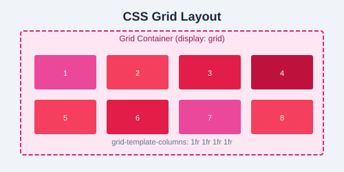

You've learned the fundamentals of CSS. Now it's time to put it all together with real projects, challenges, and a clear path toward certification and career readiness.
Study these common patterns to understand how professional CSS is written:
/* Card component */
.card {
background: #fff;
border-radius: 8px;
box-shadow: 0 2px 8px rgba(0,0,0,0.1);
overflow: hidden;
}
.card__image { width: 100%; height: 200px; object-fit: cover; }
.card__body { padding: 16px; }
.card__title { font-size: 1.25rem; margin-bottom: 8px; }
.card__text { color: #64748b; line-height: 1.6; }
/* Button system */
.btn {
display: inline-block;
padding: 10px 20px;
border: none;
border-radius: 6px;
font-weight: 600;
cursor: pointer;
transition: all 0.2s;
}
.btn-primary { background: #3b82f6; color: #fff; }
.btn-primary:hover { background: #2563eb; }
.btn-secondary { background: #e2e8f0; color: #1e293b; }
/* Centered layout */
.container {
max-width: 1200px;
margin: 0 auto;
padding: 0 16px;
}/* Smooth scrolling */
html { scroll-behavior: smooth; }
/* Aspect ratio boxes */
.aspect-16-9 { aspect-ratio: 16 / 9; }
/* Truncate text to one line */
.ellipsis {
white-space: nowrap;
overflow: hidden;
text-overflow: ellipsis;
}
/* Custom scrollbar */
::-webkit-scrollbar { width: 8px; }
::-webkit-scrollbar-track { background: #f1f5f9; }
::-webkit-scrollbar-thumb { background: #94a3b8; border-radius: 4px; }
/* Smooth image loading */
img { content-visibility: auto; }display: flex do to child elements?justify-content and align-items?box-sizing: border-box do?auto-fit and auto-fill in Grid?Style a personal profile card with a photo, name, bio, and social links using Flexbox. Center it on the page.
Build a responsive blog homepage with a header, featured posts grid (using CSS Grid), a sidebar with categories, and a footer. Use media queries for mobile layout.
Create a product landing page with a fixed navigation bar, hero section with gradient background, animated elements using @keyframes, a pricing table with 3 columns, and a contact form with styled inputs. Make the entire page responsive and use SASS (.scss) for the styles.
Combine everything you've learned into a multi-page website:
| Week | Focus |
|---|---|
| 1 | Selectors, box model, colors, backgrounds |
| 2 | Layout with Flexbox & Grid |
| 3 | Responsive design, media queries |
| 4 | Animations, transitions, transforms |
| 5 | SASS, advanced selectors |
| 6 | Build a full project |
box-sizing affects it.position property work? Compare relative, absolute, fixed, and sticky.